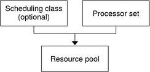

Previous
Previous
Resource Pools (Overview)
This chapter discusses the following features:
Resource pools, which are used for partitioning machine resources
Dynamic resource pools (DRPs), which dynamically adjust each resource pool's resource allocation to meet established system goals
Resource pools and dynamic resource pools are services in the Solaris service management facility (SMF). Each of these services is enabled separately.
The following topics are covered in this chapter:
About Enabling and Disabling Resource Pools and Dynamic Resource Pools
SPARC: Dynamic Reconfiguration Operations and Resource Pools
Using poolstat to Monitor the Pools Facility and Resource Utilization
For procedures using this functionality, see Chapter 13, Creating and Administering Resource Pools (Tasks).
Introduction to Resource Pools
Resource pools enable you to separate workloads so that workload consumption of certain resources does not overlap. This resource reservation helps to achieve predictable performance on systems with mixed workloads.
Resource pools provide a persistent configuration mechanism for processor set (pset) configuration and, optionally, scheduling class assignment.
Figure 12-1 Resource Pool FrameworkA pool can be thought of as a specific binding of the various resource sets that are available on your system. You can create pools that represent different kinds of possible resource combinations:
pool1: pset_default |
pool2: pset1 |
pool3: pset1, pool.scheduler="FSS" |
By grouping multiple partitions, pools provide a handle to associate with labeled workloads. Each project entry in the /etc/project file can have a single pool associated with that entry, which is specified using the project.pool attribute.
When pools are enabled, a default pool and a default processor set form the base configuration. Additional user-defined pools and processor sets can be created and added to the configuration. A CPU can only belong to one processor set. User-defined pools and processor sets can be destroyed. The default pool and the default processor set cannot be destroyed.
The default pool has the pool.default property set to true. The default processor set has the pset.default property set to true. Thus, both the default pool and the default processor set can be identified even if their names have been changed.
The user-defined pools mechanism is primarily for use on large machines of more than four CPUs. However, small machines can still benefit from this functionality. On small machines, you can create pools that share noncritical resource partitions. The pools are separated only on the basis of critical resources.